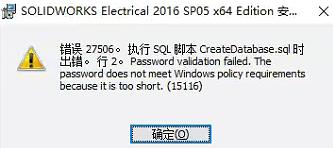
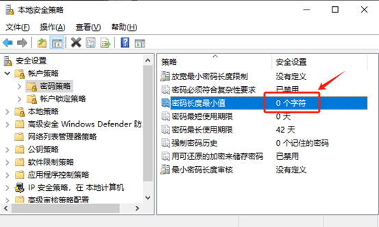
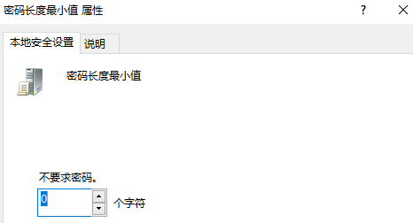
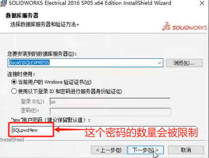

Electrical电气安装密码验证识别失败
问题
SOLIDWORKS Electrical电气在安装SQL数据库相关程序时，提示：“密码验证失败。密码不符合 Windows 策略要求，因为它太短（Password validation failed. Thepassword does not meet Windows policy requirementsbecause itis too short.(15116)）”。
方法
在 Windows 本地策略中，当启用密码最大长度的密码策略时，都会出现此问题。若要成功通过安装，请修改策略或修改密码
修改策略
在“运行”框中运行 secpol.msc 或从命令提示符运行来禁用此策略。
然后，将显示“本地安全策略”窗口，如下所示。
单击“帐户策略”-“>密码策略”，然后将最大密码长度设置为零（如下图）。
修改密码
在电气安装程序中，在数据库服务器步骤里，会需要填入SQL 的“tew”用户密码。这里的长度就会被window策略限制，可有修改密码长度通过策略。
